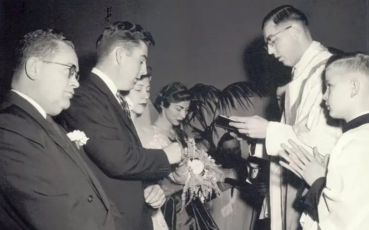
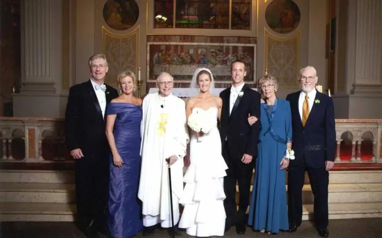

“It was maybe taken for granted that I would be the one to do it,” says the Reverend Allan Nilles, now 89, who notes that he and his sister have always been close and he’d been ordained a Catholic priest six years already by then.
Though Nilles was serving in Jamestown at the time, the marriage celebration of his sister Margaret “Peg” Nilles to Jerome Mitten took place at St. Anthony’s of Padua in Fargo – the family’s home parish.
Nilles couldn’t have guessed then that some 28 years later he’d be presiding over the wedding of Peg’s son, his nephew, Pat Mitten, and 30 years after that, in June 2013, guiding the vows of his great-niece, Pat’s daughter Maggie Mitten.
Each took place in a different location, with the second wedding in Michigan, and the final, in the Chicago area near the home of the bride’s parents.
Nilles says though it’s probably happened before, he doesn’t know any other priests who’ve officiated at what he calls a three-generational marriage. “I asked a priest friend of mine who has 17 siblings if it had happened with his family, but it had not.”
In all, the now-retired priest has presided over close to 260 weddings through the years. He’s pretty sure he won’t do a four-generational wedding, he says, considering that he’s “in delicate health,” and his attendance at the most recent one was even questionable, but he’s pleased it came to pass.
Though the first wedding seems too long ago now for Nilles to recall too many details, Peg remembers it well, including how much it meant for her to have her brother play such an integral role.
“He had a very unique way of putting the couples being married at ease. If they’d made up their own vows, he’d put (the words) upside-down in his book, and he would tip the book a little to give them clues if they forgot any part of the vows,” says Peg, now of Florida.
Through the years, the fact that “Uncle Al” had been part of that first ceremony came up occasionally in conversation, so when Peg’s third son, Pat, announced his engagement, the idea of a repeat emerged.
“Our wedding was at my wife’s family parish where her aunt worked,” Pat says, “so then to have my uncle there doing the wedding, it was very much a family event– just a terrific celebration.”
At that point, Nilles was still providing his “vow cheat sheet” to help the couples along. “We were comforted by that,” Pat says, “and also, since his handwriting looks strikingly similar to his mother’s, my (deceased) grandmother’s, I felt her presence there as well.”
Pat also recalls a “pep talk” his uncle had given him and his future wife, Kate, the night before the wedding, reminding them how a wedding can be a very complex occasion.
When Pat asked what he meant, Nilles explained that each human being is made of three people – the person others think we are, the person we think we are, and the person we are in God’s eyes.
“He said that a wedding brings all six of those people together and reminded us that us being our true selves to each other was the most important thing,” he recalls. “It was just sage advice and I’ll never forget it.”

Maggie’s wedding in June happened nearly 30 years to the day of her parents’ wedding. She says her great-uncle’s presence was especially important to her because the wedding didn’t take place at the couple’s home parish, and her future husband, Tanner, had just become Catholic a couple months earlier.
Also making the experience special was that Nilles prefers written correspondence, and the couple conversed with him through hand-written letters in the months leading up to the ceremony.
So how does she feel about her wedding possibly being her great-uncle’s last?
“We feel really grateful that he was able to do it, given his age and how far he had to travel to be with us,” she says. “And we’re really lucky that we were able to have that kind of family history as a foundational part of our marriage.”
Peg says the three-generation wedding experience “helped cement the family together” in a way that they’ll cherish for a long time to come.
“What I liked about this wedding,” Nilles adds, “is that the idea of inviting me to officiate came from the parties themselves, and beautifully demonstrated the continuity of faith from one generation to the next.”
[The preceding article appeared in The Forum’s SheSays section Sept. 14, 2013; another article followed from this in the National Catholic Reporter in May 2014: https://www.ncronline.org/preview/three-weddings-and-priest]